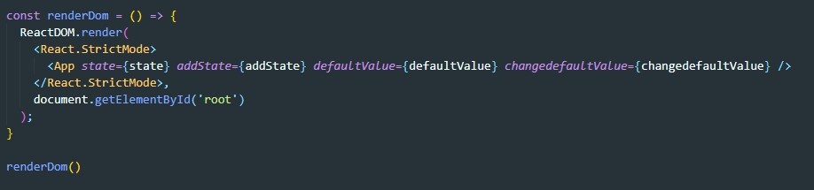
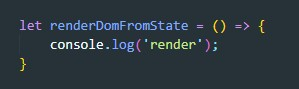
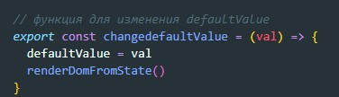
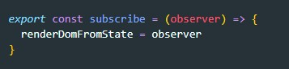
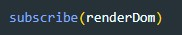

Циклическая зависимость это когда два файла импортируют друг другу данные (state или функции)
Рассмотрим пример: у нас есть два файла index.js и state.js
index.js содержит в себе функцию render-а которыую мы вынесли в отдельную переменную, но эту функцию мы НЕ ЭКСПОРТИРУЕМ
В файле state.js мы имеем сам state и функции изменения этого state. Что бы каждое изменение state у нас отображалось мы должны в функции изменения state вызывать функцию render. Но так как мы из state.js импортируем в index.js данные, то мы не можем импортировать из index.js в state.js функцию render так как это породит циклическую зависимость. Для выхода из ситуации будем использовать callback
Сначала в index.js мы создадим функцию заглушку, которая ничего полезного делать не будет. ВАЖНО эту функцию объявлять не через const, а через let т.к. потом мы будем эту функцию переопределять. Назовем эту функцию renderDomFromState
Теперь вызовем эту функцию-заглушку в функции изменения state (в примере это просто изменение значения переменной)
Теперь самое важное! Мы создадим функцию в файле state.js, которая будет принимать в качестве аргумента другую функцию и записывать ее в переменную renderDomFromState и эту функцию мы будем экспортировать. Назовем мы ее subscribe
Теперь переходим в файл index.js и импортируем туда нашу функцию subscribe вызовем ее и в качестве аргумента передадим функцию renderDom
Вот и все! state.js получил функцию renderDom и записать ее в переменную renderDomFromState. И нет никакой циклической зависимости. У нас импорт происходит только из state в index